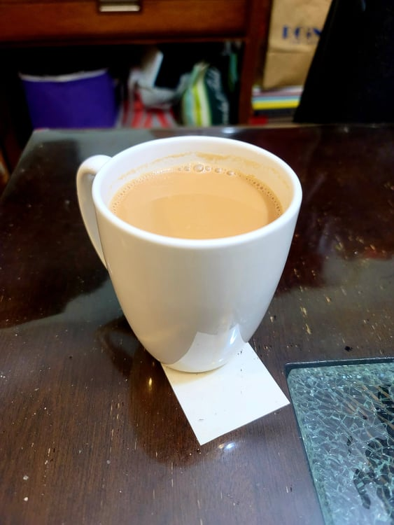

Karak Chai

Ingredients:
- 2 cups Water
- 1 tbsp Loose leaf black tea or 3 tea bags, or more to taste
- 2 Green cardamom, crushed
- 1/8 tsp Saffron threads
- Optional: 2 Cloves
- 1 tbsp Sugar
- 1/3 cup Evaporated milk
Instructions:
- Place the water into a saucepan and bring to a boil over high heat. Add in the tea and let boil for 1 minute.
- Add in the cardamom, saffron, and cloves. Let boil for another 30 seconds.
- Mix in the sugar and milk. Let come to a foaming boil and then remove from heat to allow the foaming to stop. Place back onto heat and repeat for 5 minutes or until the tea is a caramel color.
- Strain and serve immediately.